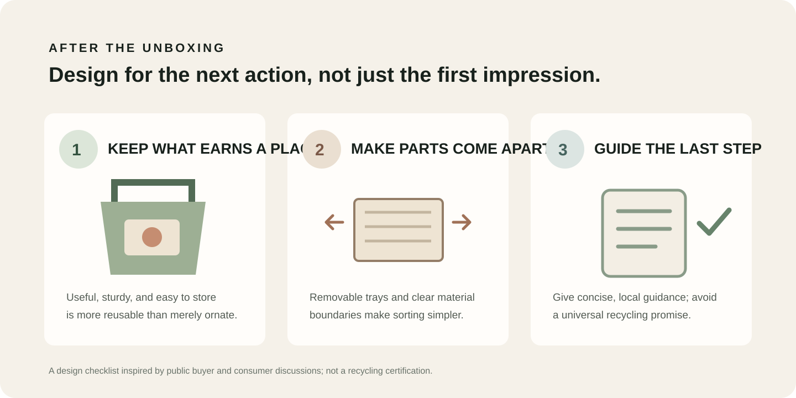

Beauty Packaging After the Unboxing: Design for What Customers Keep
Use, storage, separation and disposal all shape the life of a beauty package after the first reveal.
Quick answer: design beauty packaging for the action a customer can realistically take after opening it. A sturdy, useful box may be kept; a tray that separates cleanly may be easier to sort; mixed materials and hard-to-clean components can be difficult to deal with. “Reusable” and “recyclable” should describe a real design and a real local route, not just a finish or a paper-looking surface.

What do people actually do with beauty packaging?
In a 2026 r/MakeupRehab discussion about used beauty packaging, commenters described several different outcomes: keeping attractive or sturdy pieces, reusing components, taking eligible items to a local collection point, and discarding packaging when it was difficult to clean or no local route existed. Some wanted refill formats; others said they were trying to buy less so they would have fewer empties to handle. The thread was started by a packaging-company account, so it is best treated as a prompt for questions rather than independent consumer research.
A separate MakeupRehab thread about keeping product boxes surfaced a different tension: original packaging can retain product information and make a product feel special, but it can also take up space and add steps to a routine. These comments are useful prompts for design questions, not a representative consumer survey.
For a packaging buyer, the takeaway is practical: the experience after opening includes more than the first impression. It includes whether the box has a useful second purpose, whether parts separate without a struggle, and whether a customer can understand what to do with each component.
How can you design a box people may want to keep?
Do not assume customers will keep a package simply because it is premium. Give the outer box a clear use after the product is removed: a drawer for small accessories, a compact storage box, or a presentation case that fits the product set. The second use should make sense for the dimensions and closure, without requiring the customer to preserve fragile decoration or special inserts.
- Make the structure genuinely useful: choose a stable shape, an opening that is easy to repeat, and an interior that can be cleared without tearing the box apart.
- Keep storage in mind: an attractive package that is bulky, awkward to stack or hard to close may become clutter. Ask whether a smaller footprint or removable tray could preserve the presentation while reducing the space needed.
- Use decoration with restraint: foil, lamination, magnets and fabric details may support a particular look, but review how they affect the intended second use and how the parts can be separated later.
For a beauty gift set, test the filled box and then test it again empty. Does the empty structure still close? Can the tray lift out in one piece? Is there enough room for the customer’s likely next use? Those checks are more informative than calling a box “keepsake” in a product description.
What makes packaging easier to separate after use?
Mixed components can create confusion when they are permanently bonded or when their materials are hard to identify. A r/PackagingDesign discussion on practical packaging choices includes a useful caveat: consumer disposal behavior depends on what local programs accept, so clearer information may help, but it cannot make an unsuitable material accepted everywhere.
Before finalizing a rigid gift box or folding carton, map the parts that a customer will encounter: outer wrap, board shell, insert, ribbon, magnet, window and any protective sleeve. Then ask which pieces can be removed cleanly and which need to stay together for product protection.
| Design choice | Question to test | Evidence to collect |
|---|---|---|
| Removable insert | Can the tray come out without tearing the box? | Open and remove it using ordinary hand movements; note snags, glue points and loose fit. |
| Mixed finishes or attachments | Can customers see what is attached and what can separate? | Check whether a component can be removed without tools and whether any label or symbol is accurate for the destination market. |
| Refill or replacement component | Can the inner product or pan be replaced while the outer component remains usable? | Test the replacement sequence with the real component; document the instructions and the parts that still become waste. |
| Disposal message | Does the instruction match the sales destination? | Verify wording against local collection guidance before printing; avoid a blanket claim for markets with different systems. |

How should a brand communicate the next step?
Keep the instruction short, specific and destination-aware. If a package is intended to be kept, give a plausible use instead of a vague “reuse me” message. If parts should be separated, identify the parts in plain language. If recycling is suggested, check the destination’s accepted materials and preparation rules before printing the instruction.
- Name the component: say “remove the paperboard tray” rather than “separate packaging.”
- Make the action visible: use a small printed panel or a clear sequence near the opening, where the package is already in the customer’s hands.
- Write for the shipment market: do not assume one recycling symbol or material phrase explains the local collection route everywhere.
- Check legibility: the instruction should still be readable at the size and contrast used on the finished box.
Before approving artwork, collect the intended destination markets from the brand team, then confirm the claim and wording with the appropriate local guidance or compliance reviewer. Material composition alone does not establish that a finished, decorated pack is accepted in every municipal programme.
What should a buyer ask a packaging supplier?
- Which parts of this design are made from different materials, and how are they joined?
- Can the insert or tray be removed without damaging the outer box?
- Can you provide an unprinted or production-representative sample so we can test opening, reuse and separation?
- Which finishes, windows, magnets or ribbons affect the way parts can be separated?
- What material and construction information can you document for our market-specific review?
- Can any component be replaced, refilled or reused without replacing the full presentation box?
Frequently asked questions
Does paper-based packaging automatically mean recyclable packaging?
No. The finished pack may include coatings, laminations, windows, adhesives or attached components, and collection rules vary by location. Confirm the complete construction and local acceptance before making a recycling claim.
Will customers keep a premium gift box?
Some people keep attractive or useful boxes; others discard packaging to save space. Reddit comments illustrate both behaviors. Test a plausible second use with target customers rather than assuming decoration alone will make a box worth keeping.
Can a removable tray improve the unboxing experience?
It can make product access and component handling easier when the tray is sized and secured well. Test it with the filled product for movement and protection, then test whether it lifts out cleanly after opening.
Should a box include recycling instructions?
Include them when they are accurate for the intended market and explain a specific action. If the same product ships to places with different collection systems, use destination-specific information or avoid a universal recycling claim.
Key takeaways
- Design the package around what a customer can actually do after opening: keep it, separate it or follow locally valid disposal guidance.
- Useful structure and manageable storage matter more for repeat use than a “keepsake” label alone.
- Make inserts and other components removable when doing so still protects the product.
- Treat Reddit as a source of questions and lived examples, not as a measured estimate of customer behavior.
Planning a beauty or fragrance gift set? Share the product dimensions, quantity, target markets and any reuse or separation goals through our quote page so the structure and sample can be reviewed against those requirements.
Reddit sources: r/MakeupRehab, “What do you do with your makeup packaging?” (September 2026; thread opened by u/Packlane_com); r/MakeupRehab, “Do you guys throw away makeup packaging?” (May 2026); r/PackagingDesign, “Advice: practically eco-better packaging?” (June 2024). Threads reflect individual perspectives and are not a representative survey, technical standard or proof of local recycling acceptance.
Start with a testable specification.
Share the product, quantity, destination and packaging goals to discuss a suitable sample route.
→ Request a Custom Quote